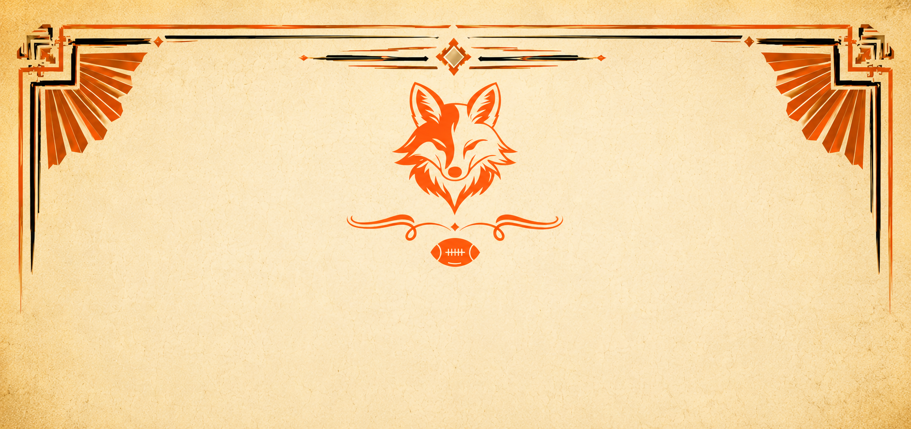

Andrew Williams
One and Done
A 4-10 record, a 94.62 scoring average, and the shortest tenure in league history...

For three seasons, the managers of the Fox Mill Fantasy Football Club have battled for supremacy across the autumn campaign. Championships have been won, questionable trades have been approved, and legends have been forged beneath bright lights and entirely fictional digital rosters.
A 4-10 record, a 94.62 scoring average, and the shortest tenure in league history...
Where do you even begin...